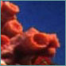

|
||||||||||||||||||||||
The Lucayans (derived from 'lukka-caire' meaning island people) were the first known inhabitants of the Exumas, having settled here in the Ninth Century AD. They set up egalitarian communities in coves, built thatched shelters, and lived off the land and from the sea. Columbus, perhaps the first tourist, arrived in San Salvador in 1492, thinking he had found India. Spanish explorers followed in Colombus's trail and within 25 years the entire indigenous population was virtually gone. The Spanish bestowed on the islands the name "Baja Mar" - meaning shallow seas - and ever since the islands have been called the Bahamas. The location and geography of the islands attracted many well-known pirates who dominated the Bahamas for the next hundred years. The waters are still believed to be rich with treasure from ships lured into the shallow waters. This 'Golden Age of Piracy' did not end until the early 1700s, when Britain claimed the islands and recognised them as a colony. Following Britain's defeat in the American Revolution, southern loyalists brought slaves to the islands and grew cotton under the crown's protection. After the American Civil War and Prohibition, the Bahamas was transformed into a base for 'rum-running'. Great Britain granted the islands self-government in 1964 and their status was changed from colony to Commonwealth in 1969. In 1973 the Commonwealth of The Bahamas was finally returned to its independent state.
geology
 economyThe Bahamas is a stable, developing nation with an economy heavily dependent on tourism and offshore banking. Per capita income is over US$11,000, one of the highest in the region. Its economy continues to flourish due to its stable political climate, liberal laws designed to attract investment, and its proximity to North America. Tourism accounts for more than 60% of the GDP and directly employs 40% of the local labour force. Shipping accounts for 20% while agriculture and fishing contribute to less than 10%. The country's GDP is growing at a rate of 4% per year. The Bahamian dollar is the basic currency and is traded at parity with the US dollar. |
||||||||||||||||||||||


 people and culture
people and culture